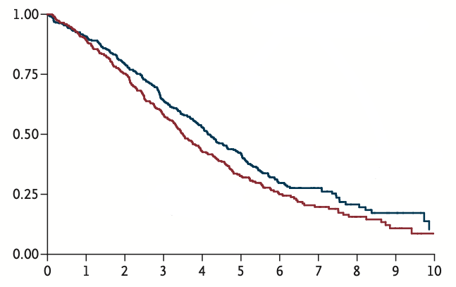
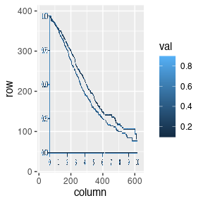
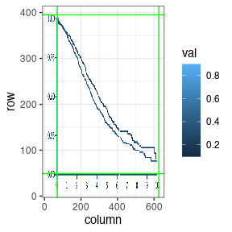
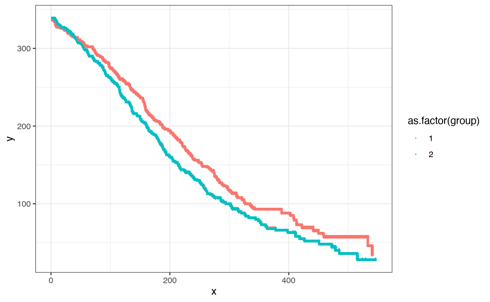
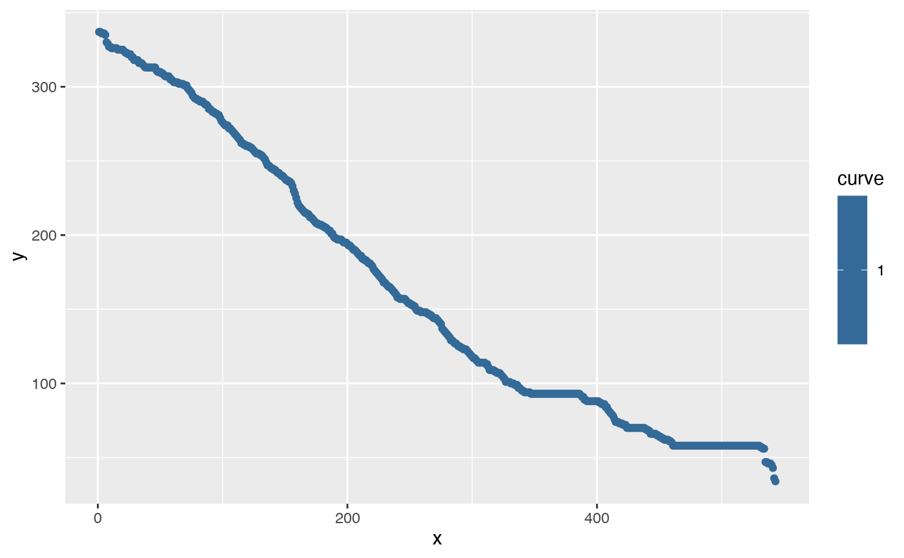
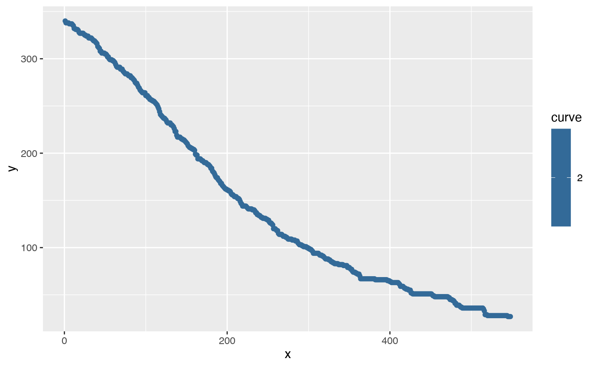
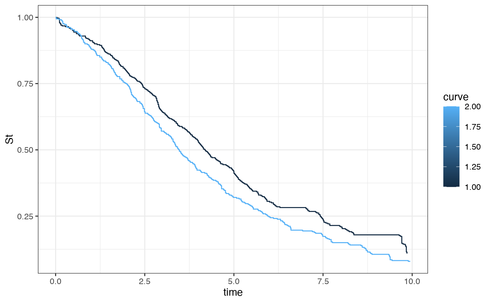

Step-by-step-digitization
Jasper Zhang
2023-06-07
Step-by-step-digitization.RmdExample of digitizer workflow
Image to be digitized

## We use this function for plotting arrays
fun_ggplot <- function(array, sen = 0.9){
array%>% as.data.frame() %>%
mutate(row = 1:n()) %>%
gather(-row, key= "column", value = "val") %>%
mutate(column = as.numeric(str_remove_all(column,"V"))) %>%
filter( val < sen) %>%
ggplot(aes(x = column, y = row, fill = val )) +
geom_tile()
}
img_name = "KMcurve.png"
img_path = paste0(here::here("vignettes"),"/",img_name)
num_curves = 2 # there are two curves in the plot
x_start = 0 # x axis range: 0 to 10 by step size 1
x_end = 10
x_increment = 1
y_start = 0 # y axis range: 0 to 1 by step size 0.25
y_end = 1
y_increment = 0.25
y_text_vertical = TRUE # the direction of number text on y axis, TRUE means vertical,
#the same direction as text on x axis
impute_size = 0 # the number of time intervals for curve overlapping check,
# higher number shorter intervals.
# 20,40 are suggestedReading in KM curves
step1 <-img_read(path = img_path)
fun_ggplot(step1[,,3])
step2 <- axes_identify(fig.hsl = step1,bg_lightness = bg_lightness)
fig.cropped <- step2$fig.hsl
axes <- step2$axes
fun_ggplot(step1[,,3]) +
geom_vline(aes(xintercept = c(min(axes$xaxis))), color = "green") +
geom_vline(aes(xintercept = c(max(axes$xaxis))), color = "green") +
geom_hline(aes(yintercept = c(max(axes$yaxis))), color = "green") +
geom_hline(aes(yintercept = c(min(axes$yaxis))), color = "green") +
theme_bw()
Removing ‘non KM portions of the plot’
step3 <- fig_clean(fig.hsl = fig.cropped)
step3 %>%
ggplot(aes(x =x ,y =y)) +
geom_point() +
theme_bw() ### Detecting curves
### Detecting curves
step4 <-color_cluster(fig.df = step3, num_curves = num_curves, censoring = FALSE)
# if curves overlap observed at the beginning of the study time
if(impute_size > 0){
step4 <- impute_overlap(step4,impute_size)}
step4 %>%
ggplot(aes(x =x ,y =y, color = as.factor(group))) +
geom_point(size = 0.01) +
theme_bw()
Potential overlap
step5 <- overlap_detect(fig.grp = step4)
step5 %>%
ggplot(aes(x =x ,y =y, color = as.factor(group))) +
geom_point(size = 0.01) +
theme_bw()
Event detect
step6 <-lines_isolate(fig.curves = step5)
#
step6[[1]] %>%
ggplot(aes(x =x ,y =y , color = curve)) +
geom_point()
#
#
step6[[2]] %>%
ggplot(aes(x =x ,y =y , color = curve)) +
geom_point()
# Mapping pixels to actual scales
step7 <- range_detect(step1_fig = step1,
step2_axes = step2$axes,
x_start = x_start,
x_end = x_end,
x_increment = x_increment,
y_start = y_start,
y_end = y_end,
y_increment = y_increment,
y_text_vertical = y_text_vertical)
# Merging x and y-axis values with curves
step8 <- fig_summarize(step6, step7,y_start = y_start,y_end = y_end)
step8 %>%
ggplot(aes(x = time, y = St, color = curve, group = curve)) +
geom_step() +
theme_bw()